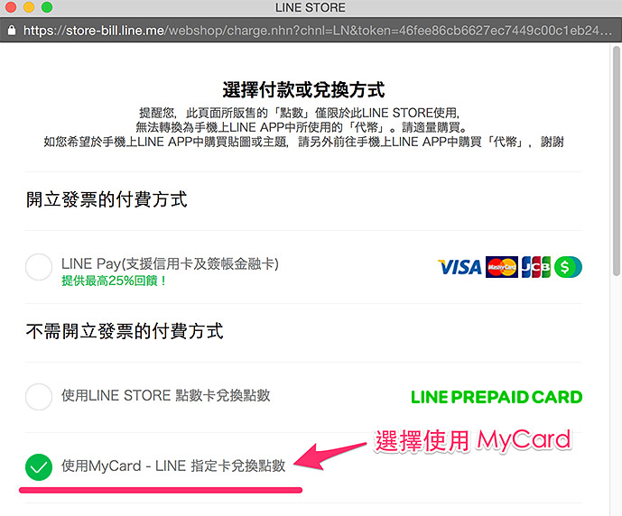
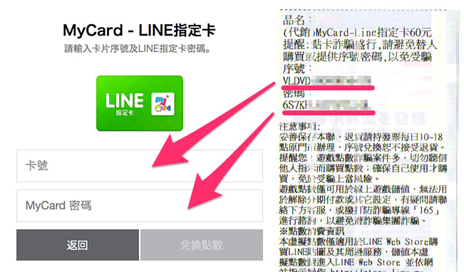

<div class="need-know" id="line">
	<h4>Line 點數兌換須知：</h4>
	<div>凡購買指定聖誕商品 ( 聖誕特餐、幸福快遞 )，以及購物滿 5,000 和 10,000 元，均可 <strong>獲贈 Line 60 點</strong>，<strong>儲值步驟請點選展開下方內容閱讀</strong>。
		<a class="readmore" data-name="readmore-button">閱讀 Line 儲值步驟 ( 點選展開 )</a>
		<ul style="background:#fff;">
			<li>1. 連結至 Line Store ( <a href="https://store.line.me/home/zh-Hant" target="_blank">https://store.line.me/home/zh-Hant</a> )。</li>
			<li>2. 使用 Line 帳號「登入」之後，點選左側「購買或兌換點數」。<br/>
			
			</li>
			<li>3. 彈出視窗選擇「使用 MyCard - Line 指定卡兌換點數」。<br/>
			
			</li>
			<li>4. 卡號的地方輸入禮品卷的「序號」，MyCard 密碼輸入禮品卷的「密碼」。<br/>
			
			</li>
			<li>5. 完成後就會出現「點數已經加值成功」。<br/>
			</li>
		</ul>
	</div>
</div>